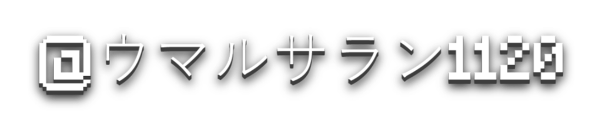
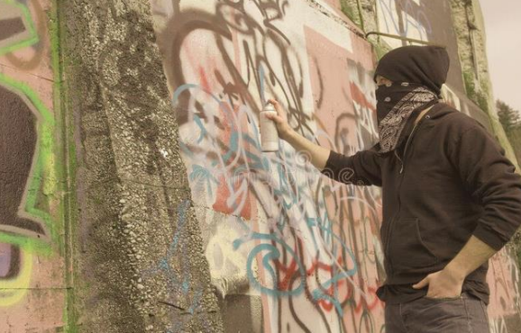
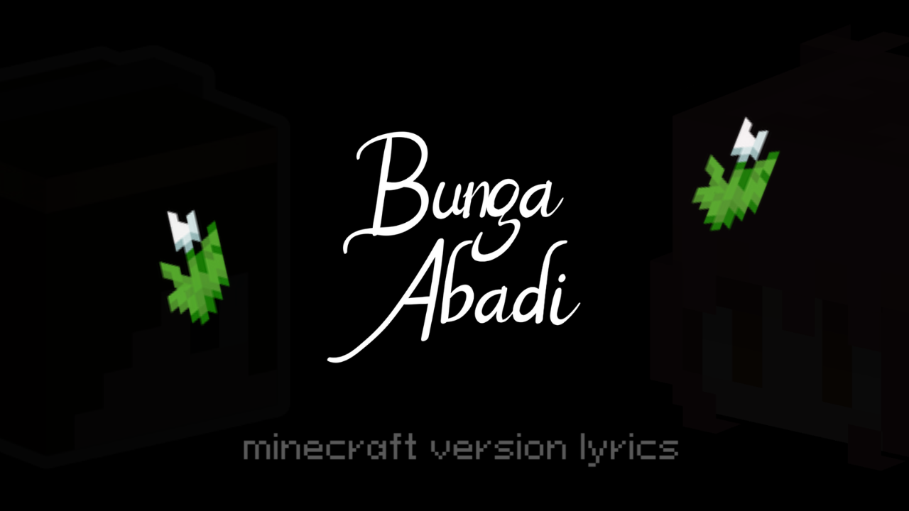
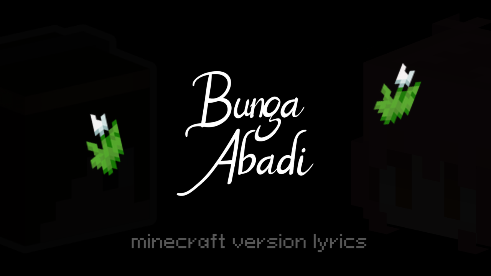
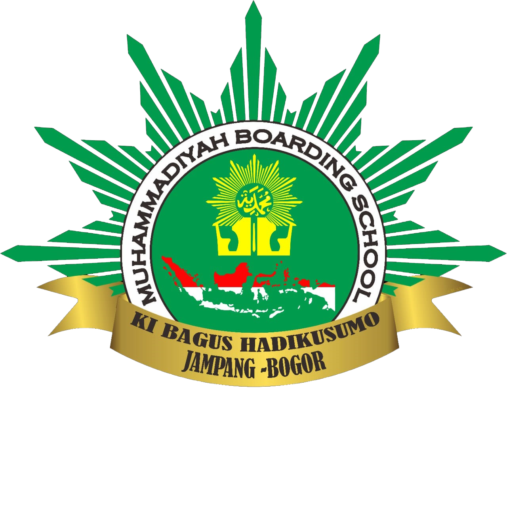

名前 • Nama • اسم
氏名およびその他のデータ º الاسم الكامل والبيانات الأخرى

Umar Fauzan Irvan atau Kerap dipanggil Umar ini Lahir pada 19 November 2008 di Depok, Jawa Barat . Setelah Menamatkan Mondok Pesantren 3 Tahun, Umar Melanjutkan Pendidikannya Di SMK Wikrama Bogor. Sekarang Umar Tinggal di Sawangan, Pasir Putih, Depok.
Data Lainnya
Tempat Tinggal Di Depok, Sawangan
スキル • Keahlihan •مهارة
Editor Pemula - Gamer - Scratcher - Youtuber - Content Creator
50%
Penguasaan HTML & CSS
95%
Attitude
45%
Arabic Languange
*Data Bisa Berubah Seiring waktu
Vandalisme adalah tindakan secara sengaja dan tanpa izin merusak, menghancurkan, atau mencemarkan properti orang lain dengan tujuan menunjukkan kemarahan, frustrasi, atau hanya untuk kesenangan pribadi, tanpa mempertimbangkan kerugian yang ditimbulkan pada pemilik properti.
Salah satu tahap penelitian Tindakan Kelas adalah observasi awal. Salah satu bagian dari tugas tentang kenakalan remaja adalah observasi ini. Tujuan observasi ini adalah untuk mendapatkan pemahaman yang lebih baik tentang pola dan jenis perilaku negatif yang terjadi di kalangan remaja. Diharapkan bahwa data yang diperoleh dari observasi ini akan dapat memberikan gambaran yang lebih akurat tentang sumber dan efek dari perilaku negatif tersebut.
Studi awal ini dilaksanakan dengan melibatkan 15 orang siswa sebagai responden, dengan fokus pada pandangan umum mengenai vandalisme. Berdasarkan hasil observasi yang dilakukan oleh kelompok 1, ditemukan bahwa sekitar 86,7% siswa pernah menyaksikan aksi vandalisme, sementara 13,3% lainnya belum pernah menyaksikan hal tersebut.
Jenis tindakan yang paling sering mereka lihat meliputi:

Adapun faktor utama yang memicu tindakan vandalisme menurut responden adalah:

Harapan Penanganan Masalah Vandalisme Komentar responden mengenai penanganan vandalisme meliputi:
"Tangkap dan hukum seadil-adilnya." "Penjarakan pelaku." "Pihak berwenang diharapkan bisa segera mengurangi tindakan vandalisme." "Perlu pengawasan lebih ketat dan aturan yang lebih jelas untuk mengurangi perilaku ini."
Saran Masyarakat untuk Pencegahan Vandalisme Beberapa ide yang muncul dari masyarakat untuk pencegahan vandalisme antara lain:
"Memberi kertas kepada seseorang yang melakukan vandalisme." "Lokasi vandalisme harus tepat." "Jangan di tempat umum, gunakan tempat yang sudah disediakan." "Diadakannya edukasi tentang vandalisme." "Hukum mati orang yang melakukan kejahatan vandalisme." "Berikan kertas gambar."
Dukungan terhadap Edukasi Vandalisme Dukungan terhadap edukasi tentang vandalisme sangat tinggi:
86,7% responden sangat mendukung. 6,65% responden mendukung. 6,65% responden lainnya kurang mendukung.
ありがとう ᓚᘏᗢ
.png) 

Riwayat Pendidikan
(2018-2021) SD Prestasi Global
(2021-2024) MBS KBH Bogor
.png)
(2024-2027) SMK Wikrama Bogor